OPEN MicroLED DRIVER ASIC / 实验性研发与教学 / 2026-10-20
单通道 NRZ：从晶体管电路
到实际互连
比较受限摆幅电压驱动与电流转向：同一 MicroLED 负载、数据序列和接收条件，加入实际器件几何与版图寄生后，速率、能耗与限制怎样变化？
1. 先看本轮完成了什么
本轮为 A、B 两条既有晶体管路线建立了真实 GDS 核心，完成固定公开 PDK 下的 DRC、LVS 与寄生参数实验。数字输入仍由测试台提供；没有把串行器、时钟恢复、pad / ESD、稳压器、封装或光接收机做进芯片。
完成两版核心几何与连接检查、全网电阻提取和经过独立审计的电容组装。名义条件下，加入 RC 后最高离散通过点分别为 A：2 Gb/s；B：0.5 Gb/s。这些点在固定负载与接收代理下取得；需结合电源实现、角落、应力与数值控制判断可用范围。
| 路线 | 原理图最高筛查点 | RC 最高筛查点 | 0.5 Gb/s 原理图能耗 | 0.5 Gb/s RC 能耗 | 变化 |
|---|---|---|---|---|---|
| A | 2.00 Gb/s | 2.00 Gb/s | 905.5 fJ/bit | 950.8 fJ/bit | 5.00% |
| B | 0.50 Gb/s | 0.50 Gb/s | 1094.6 fJ/bit | 1137.9 fJ/bit | 3.95% |
“最高筛查点”只是在预设的 0.1、0.25、0.5、1、2、4、8 Gb/s 七个离散点中，通过本项目判据的最高点。不是精确极限速率，也不是硅片或真实光链路的 BER 指标。能耗包含模型中全部电源与理想 DATA 源的正向取能，按输入毛 bit 计算。
目前尚不能把名义最高点定为产品规格：SS / 125°C / 3.0 V 时，A 的 2 Gb/s 出现 64/511 比特错误，B 的 0.5 Gb/s 出现 2/511 比特错误；FF / −40°C / 3.6 V 时存在超过项目端差筛查线的过冲。当前的路线选择应同时看电流波形和完整实现成本：A 的输出驱动比较直接，但依赖可吸收回流的 VH/VL；B 保留连续尾电流和 dummy 支路，需要改进互补驱动时序与偏置稳定性。两者都还要补上实际电源、pad/ESD 和封装，才能比较完整芯片。
2. 电路如何把数据变成 LED 电流
NRZ（Non-Return-to-Zero）把每个比特保持为一个 UI（Unit Interval）内的高或低电平。例如 1 Gb/s 时 UI = 1 ns。这里的“0”仍保留约 25 µA LED 电流，“1”的 DC 目标为约 100 µA；不是每个 0 都让 LED 完全熄灭。
A：改变 LED 阴极电压
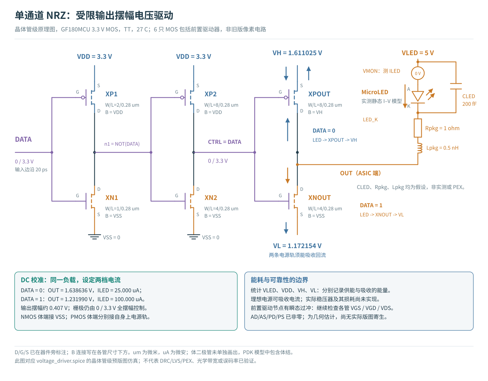
前两级 CMOS 反相器把 DATA 送至 CTRL。DATA = 1 时 CTRL 高，NOUT 导通，把 OUT 拉向低电源 VL，LED 正向电压提高、电流增大；DATA = 0 时 POUT 导通，OUT 靠近 VH，LED 电流降低。输出电压摆幅约 0.407 V，而前级与输出管栅极仍承受 0 / 3.3 V 全摆幅。
在这套阴极驱动连接中，LED 支路电流可以进入 VH / VL。测试台使用能够吸收电流的理想电源。因此 A 的结果依赖双向电源边界；本轮没有证明实际稳压器也能以相同能效供电或回收能量。
B：把已有电流切换到 LED 或 dummy 支路
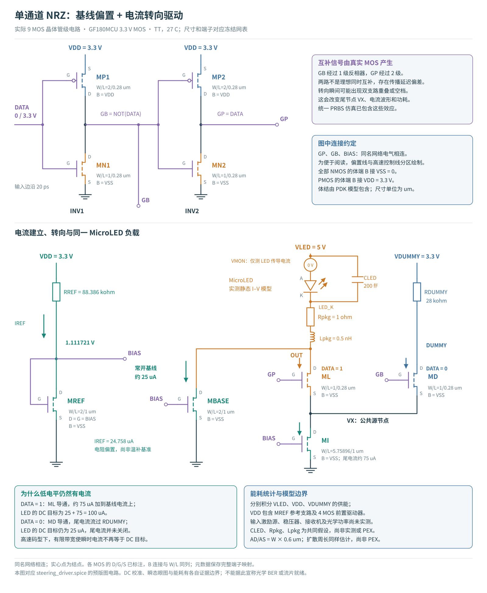
RREF 与二极管连接的 REF 建立 BIAS。BASE 持续提供约 25 µA；TAIL 产生约 75 µA，LED / DUMMY 两管决定这部分电流流向。DATA = 1 时 GP 高，尾电流流过 LED；DATA = 0 时 GB 高，尾电流流过 dummy 电阻。低电平时尾电流并未关闭，所以静态功耗仍然存在。
GB 经过一级反相器，GP 经过两级，二者存在传播延迟差。转向过程中可能发生支路重叠或空档，引起尾节点 VX 波动；“恒流转向”这个名称不保证所有瞬时电流都恒定。栅极驱动、输出阻抗和负载动态一起决定波形。
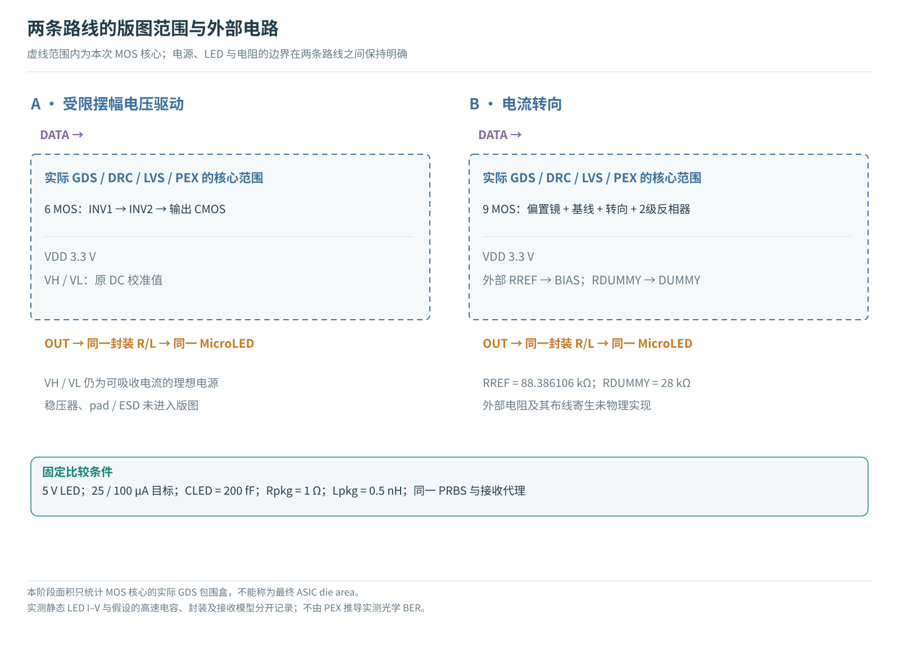
3. 把原理图放到真实版图上
采用固定 GF180MCU D 完整公开 PDK 的 3.3 V MOS。栅长主要为 0.28 µm；B 的电流镜和尾管采用 1 µm。芯片核心内部使用 Metal1～Metal4，PDK 配置提供五层金属。本轮的四层是电路实际用到的布线层，不是整片晶圆只有四种材料。
| 核心 | MOS | 宽 × 高 (µm) | 包围盒 (µm²) | 金属 | 全网 R 覆盖 | R / C 元件数 |
|---|---|---|---|---|---|---|
| A | 6 | 34.43 × 24.51 | 843.8793 | M1–M4 | 8/8 | 52 / 58 |
| B | 9 | 52.75 × 23.35 | 1231.7125 | M1–M4 | 9/9 | 99 / 73 |
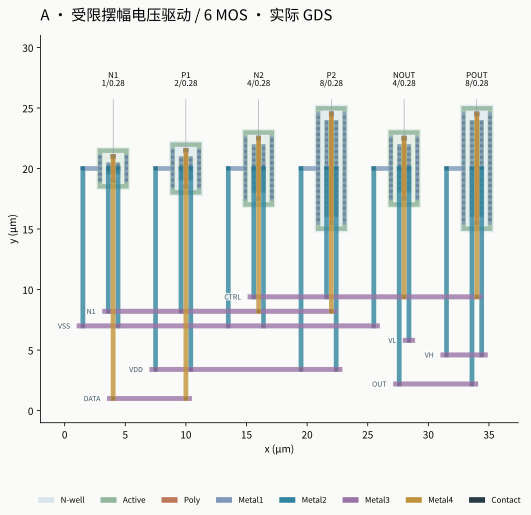
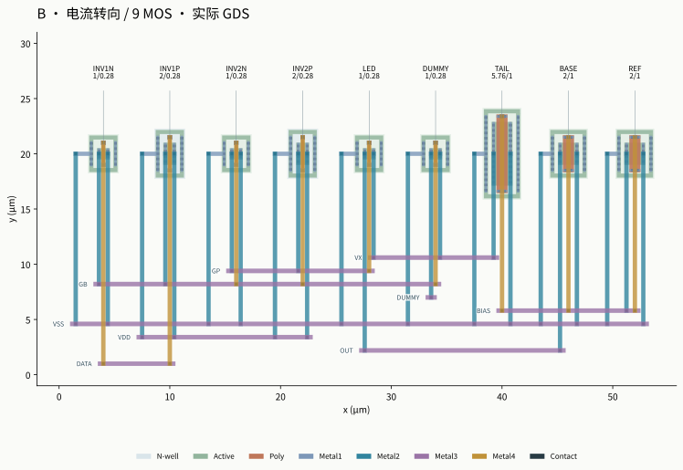
每只 MOS 使用独立扩散区域与体接触，以便检查 D/G/S/B 对应关系。局部接触先进入 Metal1；源漏和体连接经 Metal2 竖向走线；Metal3 横向总线连接各级；栅极支路使用 Metal4，避开窄间距的源漏走线。不同层的线交叉，只有设置通孔才会在当地相连。
这种排列方便教学和验证，但没有进行极限面积或高速性能优化。下一轮可以把驱动器靠近被驱动管、缩短 GP / GB / CTRL，并探索共享扩散；每次改变都要重新提取与验证，不能把缩短画面上的线直接等同于性能提高。
打开真实 GDS 分层查看器 → 可切换 A/B、隐藏金属层、高亮网络，并查看每只 MOS 的 D/G/S/B 网络、坐标和提取后的局部节点。
4. 怎样把器件变化与布线影响分开
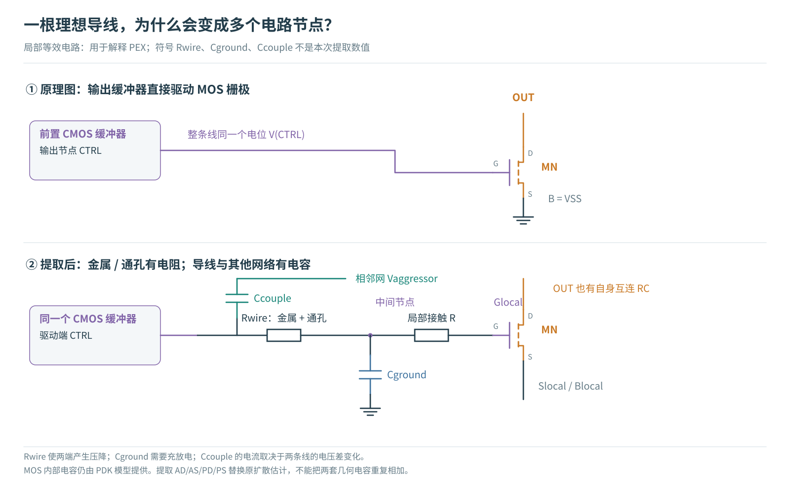
原理图把一条网络当作同一个电位。实际导线有电阻，导线与衬底、相邻导线之间有电容。驱动器需要先给这些电容充放电；电阻造成局部压降与传播延迟。MOS 内部的栅电容和结电容仍由 PDK 模型计算，不能再次当作外加线电容重复相加。
| 模型 | 保留什么 | 回答的问题 |
|---|---|---|
| SCHEM | 原网表，原 W/L 与扩散估计 | 上一阶段的结果是什么？ |
| SNAP（B） | 只把尾管宽度量化到 5.760 µm | 版图网格本身改变了多少？ |
| GEOM | 实际提取 W/L、AD/AS/PD/PS；无互连 RC | 真实器件结几何改变了多少？ |
| C | 同一器件几何与审计后的显式 C，R 短接 | 增加布线电容后的变化？ |
| RC | 同一器件与 C，加上所有提取电阻 | 保留局部供电、体端与信号压降后的变化？ |
未重新调节 VH / VL、RREF、TAIL 宽度或接收门限，使每层控制组的变化可归因。原理图基线直接读取上一批已校验原始波形，再用同一指标程序重新分析；本轮新提取模型才执行新的 SPICE 仿真。复用路径和哈希在清单中记录。
统一测试台
- MicroLED 静态 I–V：使用已锁定的公开 20 µm 黄色器件数据拟合模型；保留 DOI、数据集与来源许可。不能把这个静态拟合当作动态模型实测。
- 共同动态假设：CLED = 200 fF，封装 R = 1 Ω、L = 0.5 nH，VLED = 5 V，DATA 边沿 20 ps。光响应代理时间常数 200 ps，接收代理带宽 1 GHz。
- 32 位交替热身，254 位 PRBS7 训练，511 位独立 PRBS9 验证，32 位保护尾段。训练时选采样延迟，验证时冻结；不根据验证数据重新找最佳采样点。
- 固定门限 62.5 µA，归一化跨度 75 µA。比较判据要求 0/511 确定性比特错误、最小幅度余量 ≥ 0.1、最小左右时序余量 ≥ 0.1 UI。
- ngspice 47；主运行 Gear、最大步长 UI/40，reltol = 10⁻⁵。用步长减半与更细步长/积分方法控制检查边界，未用数值稳定元件改善电路表现。
这些条件用于公平比较本项目的两版电路。实测噪声、抖动、光耦合损失、光电探测器/TIA、真实封装和 LED 高频响应尚未进入验证，因此无法从 511 个无噪声比特推导实际 BER。
5. 为什么 DRC、LVS 通过后还要审计 PEX
DRC检查线宽、间距、包围等几何规则；LVS检查提取电路和独立原理图是否对应；PEX增加互连电阻和电容。这三件事各自回答不同问题。本轮四个故意制造的开路/短路 GDS 都能保持 DRC = 0，却被 LVS 拒绝，说明“画得符合几何规则”不等于“电路接对”。
| 检查 | A | B | 证明范围 |
|---|---|---|---|
| Magic 原生 / GDS 回读 DRC | 0 / 0 | 0 / 0 | 固定规则下的几何 |
| 独立 KLayout DRC | 0 | 0 | 固定 FEOL/BEOL/连接/网格规则 |
| 原生 / GDS 回读 LVS | 唯一匹配 | 唯一匹配 | 原理图与几何连接 |
| RC 折叠拓扑 LVS | 唯一匹配 | 唯一匹配 | R拆网之后未接错拓扑 |
| GDS 栅极断路 / VDD–VSS 短路负例 | 均被拒绝 | 均被拒绝 | 验证检查能发现真实连接错误 |
| 逐管 W/L 与 AD/AS/PD/PS 独立几何审计 | 通过 | 通过 | 弥补标准LVS忽略参数的范围 |
| r4 RC折叠后逐节点对C守恒 | 通过 | 通过 | 电容值与原.ext相同；不证明空间位置准确 |
结几何不能只靠标准 LVS
当前 Netgen 设置不会比较 AD/AS/PD/PS。本轮另行审计这些参数及单位。原网表采用扩散长度 0.6 µm 的估计；独立 PCell 实际提取为 0.44 µm。以 W = 4 µm 的 MOS 为例，AD = AS = 4 × 0.44 = 1.76 µm²；PD = PS = 2 × (4 + 0.44) = 8.88 µm。MOS 结电容会因此改变，必须由 GEOM 控制组单独识别。
SPICE 中 ad=1.76p 是面积 1.76 × 10⁻¹² m²，pd=8.88u 是长度 8.88 × 10⁻⁶ m；这里的 p、u 是数值后缀。固定 PDK 把扩散结电容交给 MOS 模型，显式提取主要保留导体的面积、边缘与耦合电容。
本轮发现并处理的提取问题
初版 r3 的原生导出有三个相互影响的问题：层次导出器把 MOS 子电路误入电阻 π 模型分支，移动了栅极电容；电阻提取过程没有读取原节点对地电容，却把耦合电容复制到两端；导出时保留原节点，进一步累加这些电容。独立审阅通过固定工具源代码和实际输出确认了原因，因此 r3 的原生 C/RC 没有用于正式速率结论。r4 保持 GDS、全部 R 与 MOS 不变，直接从 GDS 回读 .ext 取得高精度对地及耦合电容，组装成有逐元件台账的模型。另启新 Magic 进程、关闭层次导出获得纯 C 参考，核对原节点分配。
| 核心 | 对地 C (fF) | 耦合 C (fF) | 总显式 C (fF) |
|---|---|---|---|
| A | 27.272521 | 8.960561 | 36.233082 |
| B | 29.495484 | 6.489850 | 35.985334 |
| 核心 | 网络 | 该网R支路数 | 与该网相连的C总量 (fF) |
|---|---|---|---|
| A | N1 | 9 | 6.5801 |
| A | CTRL | 9 | 7.3472 |
| A | OUT | 3 | 4.6106 |
| B | GB | 11 | 8.0536 |
| B | GP | 7 | 4.3957 |
| B | VX | 5 | 3.9458 |
| B | OUT | 3 | 4.0644 |
| B | BIAS | 7 | 6.6210 |
| 核心 | 指定端点间的被动互连路径 | 有效电阻 (Ω) |
|---|---|---|
| A | DATA→N1.G | 55.856 |
| A | N1.D→N2.G | 112.898 |
| A | N2.D→NOUT.G | 108.738 |
| A | OUT→NOUT.D | 14.504 |
| A | VSS→N1.S | 17.611 |
| A | VSS→N1.B | 256.315 |
| B | DATA→INV1N.G | 55.856 |
| B | INV1N.D→INV2N.G | 73.435 |
| B | INV2N.D→LED.G | 72.866 |
| B | INV1N.D→DUMMY.G | 77.486 |
| B | OUT→LED.D | 18.095 |
| B | VSS→TAIL.S | 22.369 |
| B | VSS→TAIL.B | 136.885 |
正式 RC 是经过独立审计的模型组装，并非未经改动的 Magic 原生 RC 输出。对地 C 按 Magic 电阻网简化后保留的归一化权重分配；耦合 C 在原逻辑节点只保留一次。RC 折叠后的逐节点对误差约 10⁻³⁰ F；C-only 控制的 12 位文本输出有约 10⁻²⁷ F 舍入。矩阵守恒确认电容没有丢失或重复，但不证明高频空间分布准确。上表路径电阻由完整被动 R 网络注入 1 A、求解端差得到，其他端点开路，不包含 MOS 沟道电阻；源端与体端路径应分开看。
总显式 C 是统计数，不能当作 OUT 对地等效电容；耦合电容取决于两端电压变化。同样，所有 R 相加不等于某个端口到晶体管的有效电阻。逐网和逐端子数据保存在提取台账中。
6. 仿真结果：先 DC，再速率和能耗
6.1 没有重新调参的 DC
DC 先确认“0”和“1”的工作点。电容在 DC 开路，因此 C 与 GEOM 应一致；加入 R 后，局部源极、电源和体端电压会变化。这个检查也能发现端口接错、体端短接、模型缩放错误等基础问题。
| 路线 | 模型 | 数据位 | LED DC µA | 相对目标误差 |
|---|---|---|---|---|
| A | C | 0 | 24.999998 | -0.0000% |
| A | C | 1 | 100.000000 | -0.0000% |
| B | C | 0 | 25.000014 | 0.0001% |
| B | C | 1 | 100.013874 | 0.0139% |
| A | GEOM | 0 | 24.999998 | -0.0000% |
| A | GEOM | 1 | 100.000000 | -0.0000% |
| B | GEOM | 0 | 25.000014 | 0.0001% |
| B | GEOM | 1 | 100.013874 | 0.0139% |
| A | RC | 0 | 24.939781 | -0.2409% |
| A | RC | 1 | 99.206902 | -0.7931% |
| B | RC | 0 | 24.986327 | -0.0547% |
| B | RC | 1 | 99.709469 | -0.2905% |
| A | RCLUMP | 0 | 24.939781 | -0.2409% |
| A | RCLUMP | 1 | 99.206902 | -0.7931% |
| B | RCLUMP | 0 | 24.986327 | -0.0547% |
| B | RCLUMP | 1 | 99.709469 | -0.2905% |
| A | SCHEM | 0 | 24.999998 | -0.0000% |
| A | SCHEM | 1 | 100.000000 | -0.0000% |
| B | SCHEM | 0 | 25.000014 | 0.0001% |
| B | SCHEM | 1 | 100.000035 | 0.0000% |
| B | SNAP | 0 | 25.000014 | 0.0001% |
| B | SNAP | 1 | 100.013874 | 0.0139% |
6.2 速率与能耗的共同约束
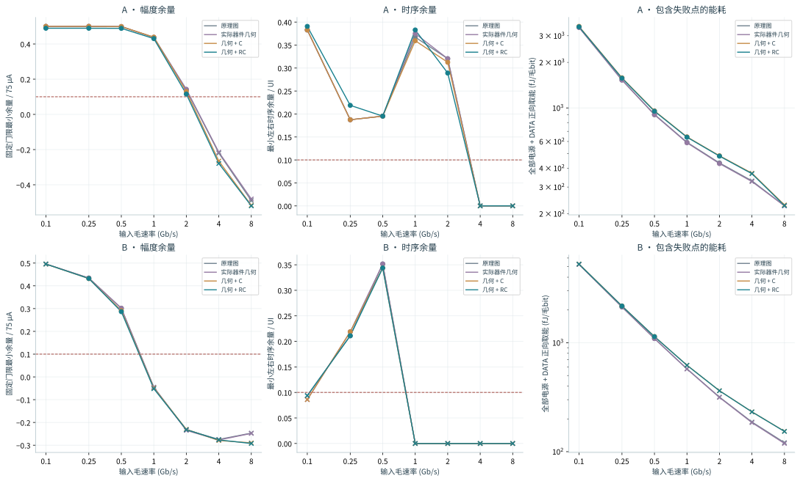
RC 通过集合为 A = {0.1, 0.25, 0.5, 1, 2} Gb/s；B = {0.25, 0.5} Gb/s。不能把最高点写成其以下全部速率必然通过。尤其 B 在 0.1 Gb/s 的 RC 结果是 0/511 比特错误，但右侧时序余量只有 0.09375 UI，小于 0.1 UI；原理图基线也有此现象。冻结训练规则先最小化比特错误、再最大化竖向门限余量，并未优先居中水平眼图，因此不能把这项低速失败归因于器件带宽。下一轮应把水平余量纳入独立接收训练实验，保持本轮合同不变。A 在 2 Gb/s：GEOM、C、RC 的正向取能依次为 428.61、482.85、480.26 fJ/毛bit；单独增加 C 相对 GEOM 改变 +12.66%，继续加入 R 相对 C 改变 -0.54%。 B 在 0.5 Gb/s：GEOM、C、RC 的正向取能依次为 1092.28、1140.50、1137.89 fJ/毛bit；单独增加 C 相对 GEOM 改变 +4.41%，继续加入 R 相对 C 改变 -0.23%。 A 的 RC 2 Gb/s 幅度余量为 0.115567，已接近 0.1 筛查门槛，最高通过点仍需要增加设计余量。RC 能耗略低于 C-only 不能直接解释为电阻改善效率：它与 DC 电流下降和瞬态波形变化同时发生，仍应按信号质量一起评估。
展开全部名义速率数据
| 路线 | 模型 | Gb/s | 错误比特 / 511 | 幅度余量 / 75 µA | 时序余量 / UI | 正向取能 fJ/bit | 通过筛查 |
|---|---|---|---|---|---|---|---|
| A | C | 0.1 | 0 | 0.500 | 0.383 | 3459.1 | 是 |
| A | C | 0.25 | 0 | 0.500 | 0.188 | 1581.9 | 是 |
| A | C | 0.5 | 0 | 0.499 | 0.195 | 956.2 | 是 |
| A | C | 1 | 0 | 0.439 | 0.359 | 643.5 | 是 |
| A | C | 2 | 0 | 0.130 | 0.312 | 482.8 | 是 |
| A | C | 4 | 88 | -0.265 | 0.000 | 370.2 | 否 |
| A | C | 8 | 152 | -0.517 | 0.000 | 228.5 | 否 |
| B | C | 0.1 | 0 | 0.496 | 0.086 | 5287.2 | 否 |
| B | C | 0.25 | 0 | 0.432 | 0.219 | 2177.1 | 是 |
| B | C | 0.5 | 0 | 0.291 | 0.344 | 1140.5 | 是 |
| B | C | 1 | 7 | -0.049 | 0.000 | 622.2 | 否 |
| B | C | 2 | 90 | -0.230 | 0.000 | 362.9 | 否 |
| B | C | 4 | 146 | -0.279 | 0.000 | 232.2 | 否 |
| B | C | 8 | 198 | -0.290 | 0.000 | 153.9 | 否 |
| A | GEOM | 0.1 | 0 | 0.500 | 0.383 | 3404.0 | 是 |
| A | GEOM | 0.25 | 0 | 0.500 | 0.188 | 1526.8 | 是 |
| A | GEOM | 0.5 | 0 | 0.499 | 0.195 | 901.0 | 是 |
| A | GEOM | 1 | 0 | 0.438 | 0.375 | 588.3 | 是 |
| A | GEOM | 2 | 0 | 0.143 | 0.320 | 428.6 | 是 |
| A | GEOM | 4 | 83 | -0.215 | 0.000 | 325.9 | 否 |
| A | GEOM | 8 | 144 | -0.481 | 0.000 | 225.2 | 否 |
| B | GEOM | 0.1 | 0 | 0.496 | 0.086 | 5239.0 | 否 |
| B | GEOM | 0.25 | 0 | 0.434 | 0.219 | 2128.9 | 是 |
| B | GEOM | 0.5 | 0 | 0.302 | 0.352 | 1092.3 | 是 |
| B | GEOM | 1 | 6 | -0.046 | 0.000 | 574.0 | 否 |
| B | GEOM | 2 | 92 | -0.235 | 0.000 | 314.7 | 否 |
| B | GEOM | 4 | 152 | -0.277 | 0.000 | 184.8 | 否 |
| B | GEOM | 8 | 198 | -0.248 | 0.000 | 118.9 | 否 |
| A | RC | 0.1 | 0 | 0.489 | 0.391 | 3436.6 | 是 |
| A | RC | 0.25 | 0 | 0.489 | 0.219 | 1572.2 | 是 |
| A | RC | 0.5 | 0 | 0.489 | 0.195 | 950.8 | 是 |
| A | RC | 1 | 0 | 0.431 | 0.383 | 640.3 | 是 |
| A | RC | 2 | 0 | 0.116 | 0.289 | 480.3 | 是 |
| A | RC | 4 | 92 | -0.279 | 0.000 | 367.3 | 否 |
| A | RC | 8 | 153 | -0.520 | 0.000 | 226.2 | 否 |
| B | RC | 0.1 | 0 | 0.496 | 0.094 | 5274.0 | 否 |
| B | RC | 0.25 | 0 | 0.432 | 0.211 | 2171.9 | 是 |
| B | RC | 0.5 | 0 | 0.287 | 0.344 | 1137.9 | 是 |
| B | RC | 1 | 8 | -0.052 | 0.000 | 620.9 | 否 |
| B | RC | 2 | 90 | -0.232 | 0.000 | 362.3 | 否 |
| B | RC | 4 | 147 | -0.277 | 0.000 | 231.9 | 否 |
| B | RC | 8 | 190 | -0.292 | 0.000 | 153.4 | 否 |
| A | SCHEM | 0.1 | 0 | 0.500 | 0.383 | 3408.4 | 是 |
| A | SCHEM | 0.25 | 0 | 0.500 | 0.188 | 1531.2 | 是 |
| A | SCHEM | 0.5 | 0 | 0.499 | 0.195 | 905.5 | 是 |
| A | SCHEM | 1 | 0 | 0.437 | 0.367 | 592.8 | 是 |
| A | SCHEM | 2 | 0 | 0.140 | 0.320 | 432.9 | 是 |
| A | SCHEM | 4 | 83 | -0.220 | 0.000 | 329.5 | 否 |
| A | SCHEM | 8 | 148 | -0.490 | 0.000 | 225.5 | 否 |
| B | SCHEM | 0.1 | 0 | 0.496 | 0.094 | 5241.0 | 否 |
| B | SCHEM | 0.25 | 0 | 0.434 | 0.211 | 2131.2 | 是 |
| B | SCHEM | 0.5 | 0 | 0.301 | 0.352 | 1094.6 | 是 |
| B | SCHEM | 1 | 6 | -0.045 | 0.000 | 576.4 | 否 |
| B | SCHEM | 2 | 92 | -0.233 | 0.000 | 317.1 | 否 |
| B | SCHEM | 4 | 151 | -0.274 | 0.000 | 187.2 | 否 |
| B | SCHEM | 8 | 198 | -0.247 | 0.000 | 121.0 | 否 |
| B | SNAP | 0.1 | 0 | 0.496 | 0.094 | 5241.5 | 否 |
| B | SNAP | 0.25 | 0 | 0.434 | 0.211 | 2131.4 | 是 |
| B | SNAP | 0.5 | 0 | 0.301 | 0.352 | 1094.8 | 是 |
| B | SNAP | 1 | 6 | -0.045 | 0.000 | 576.5 | 否 |
| B | SNAP | 2 | 92 | -0.233 | 0.000 | 317.1 | 否 |
| B | SNAP | 4 | 153 | -0.274 | 0.000 | 187.2 | 否 |
| B | SNAP | 8 | 198 | -0.247 | 0.000 | 121.0 | 否 |
6.3 观察波形：输出摆幅与接收余量
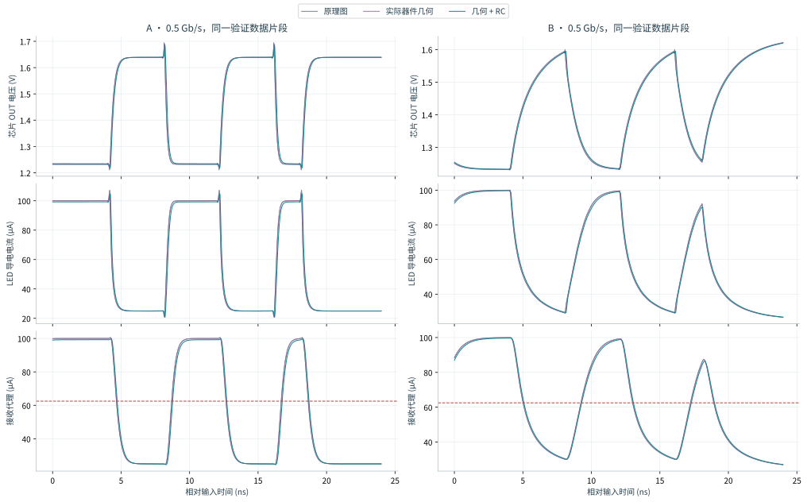
展开 1 Gb/s 与 2 Gb/s 波形
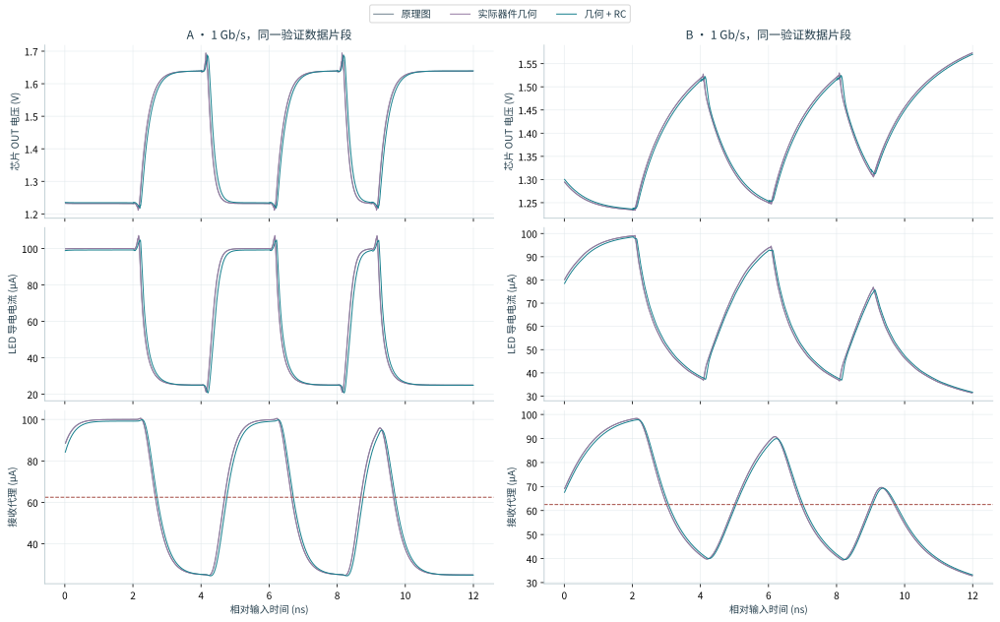
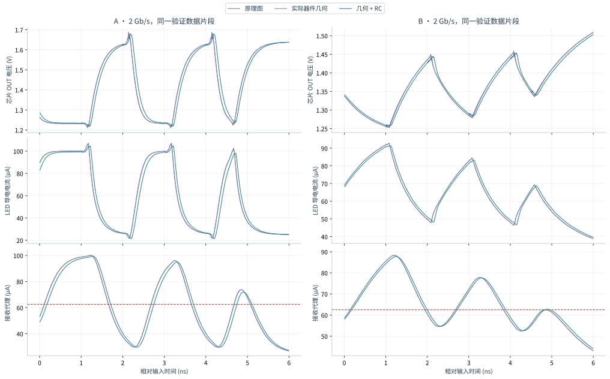
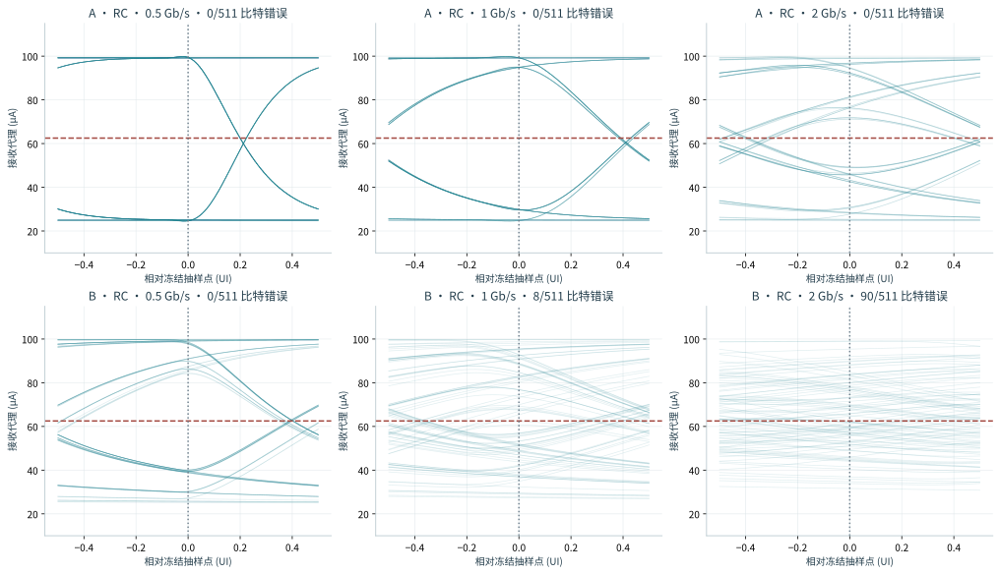
上图叠加的是验证序列的接收代理。横轴相对于训练后冻结的采样点，纵轴始终使用同一电流单位和门限。图形变窄可能来自边沿变慢、传播延迟差或码间干扰；应结合固定门限余量、左右时序余量和比特错误数判断。
6.4 能耗：给每条电源单独记账
以 SPICE 流入电源正端的电流为正，供能功率 pk(t) = −Vk(t) Ik(t)。正向取能 Edraw = Σ∫max(pk, 0)dt / 511；回灌能量 Ereturn = Σ∫max(−pk, 0)dt / 511；净能量 Enet = Edraw − Ereturn。积分窗口固定为 511 个输入 UI。DATA 输入也单独计入，避免把理想源驱动栅极的能量当作免费。
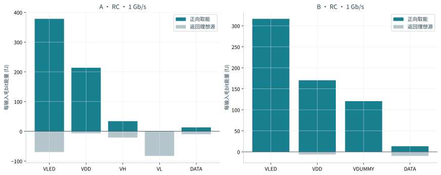
净能量较小，可能只是能量返回理想电源，并不代表真实电源能无损回收。B 的 RREF 持续消耗偏置功率，转向至 dummy 的电流同样计入能耗；A 的 VH/VL 电源实现成本尚未计算。若某个速率未通过信号判据，其 fJ/bit 仅描述该失败激励的消耗。
6.5 电容位置的敏感性
完整 RC 模型按提取器简化后保留的归一化权重分配对地电容；这是一种明确的空间近似。因此增加 RCLUMP 控制：保持全部 R、MOS 与折叠后的电容矩阵相同，把对地电容集中在原逻辑节点。这个控制只改变电容放置位置，用来检查当前结论对位置近似是否敏感。
| 路线 | Gb/s | RCLUMP相对RC能耗 | 幅度余量差 | 时序余量差/UI | 筛查结论 |
|---|---|---|---|---|---|
| A | 0.5 | -0.00139% | -0.000000 | +0.000000 | 不变 |
| A | 1 | -0.00175% | -0.000013 | +0.000000 | 不变 |
| A | 2 | -0.00398% | -0.000020 | +0.000000 | 不变 |
| B | 0.5 | +0.00002% | +0.000005 | +0.000000 | 不变 |
| B | 1 | -0.00020% | +0.000006 | +0.000000 | 不变 |
| B | 2 | -0.00089% | +0.000004 | +0.000000 | 不变 |
六个控制点中 0 个筛查结论改变。这个实验只改变对地电容落点，耦合电容仍放在原逻辑节点；即使结果接近，也只支持本核心、这些速率点对这一种位置近似不敏感，不能作为三维电容分布正确的证明。
6.6 器件应力与 PVT
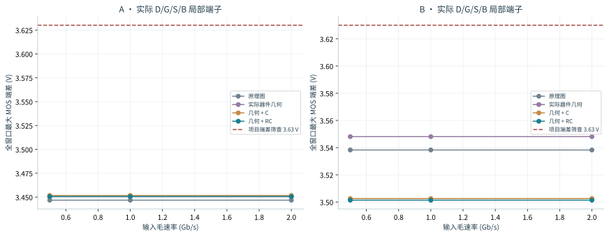
RC 名义七速率扫描的全窗口最大端差为 3.50137 V。所选 SS/FF 瞬态控制中最大值为 3.76359 V，其中 6/12 点超过项目 3.63 V 筛查线。该筛查与接收通过判据分开记录；不能因无采样比特错误就忽略过冲。它也不能替代厂方的氧化层、电流密度、体结注入和寿命规则。
展开 SS / FF 角落的瞬态对照
| 路线 | 模型 | MOS / 温度 / VDD | Gb/s | 比特错误 | 幅度余量 | 时序余量 | 接收筛查 |
|---|---|---|---|---|---|---|---|
| A | RC | ff / -40°C / 3.6 V | 0.5 | 0 | 0.491 | 0.180 | 是 |
| A | RC | ff / -40°C / 3.6 V | 1 | 0 | 0.438 | 0.336 | 是 |
| A | RC | ff / -40°C / 3.6 V | 2 | 0 | 0.164 | 0.336 | 是 |
| A | RC | ss / 125°C / 3.0 V | 0.5 | 0 | 0.304 | 0.180 | 是 |
| A | RC | ss / 125°C / 3.0 V | 1 | 0 | 0.156 | 0.266 | 是 |
| A | RC | ss / 125°C / 3.0 V | 2 | 64 | -0.231 | 0.000 | 否 |
| B | RC | ff / -40°C / 3.6 V | 0.5 | 0 | 0.242 | 0.250 | 是 |
| B | RC | ff / -40°C / 3.6 V | 1 | 32 | -0.017 | 0.000 | 否 |
| B | RC | ff / -40°C / 3.6 V | 2 | 132 | -0.351 | 0.000 | 否 |
| B | RC | ss / 125°C / 3.0 V | 0.5 | 2 | -0.003 | 0.000 | 否 |
| B | RC | ss / 125°C / 3.0 V | 1 | 102 | -0.259 | 0.000 | 否 |
| B | RC | ss / 125°C / 3.0 V | 2 | 145 | -0.364 | 0.000 | 否 |
| A | SCHEM | ff / -40°C / 3.6 V | 0.5 | 0 | 0.490 | 0.172 | 是 |
| A | SCHEM | ff / -40°C / 3.6 V | 1 | 0 | 0.438 | 0.328 | 是 |
| A | SCHEM | ff / -40°C / 3.6 V | 2 | 0 | 0.164 | 0.328 | 是 |
| A | SCHEM | ss / 125°C / 3.0 V | 0.5 | 0 | 0.312 | 0.180 | 是 |
| A | SCHEM | ss / 125°C / 3.0 V | 1 | 0 | 0.178 | 0.273 | 是 |
| A | SCHEM | ss / 125°C / 3.0 V | 2 | 64 | -0.186 | 0.000 | 否 |
| B | SCHEM | ff / -40°C / 3.6 V | 0.5 | 0 | 0.245 | 0.258 | 是 |
| B | SCHEM | ff / -40°C / 3.6 V | 1 | 32 | -0.014 | 0.000 | 否 |
| B | SCHEM | ff / -40°C / 3.6 V | 2 | 129 | -0.354 | 0.000 | 否 |
| B | SCHEM | ss / 125°C / 3.0 V | 0.5 | 0 | 0.005 | 0.031 | 否 |
| B | SCHEM | ss / 125°C / 3.0 V | 1 | 101 | -0.251 | 0.000 | 否 |
| B | SCHEM | ss / 125°C / 3.0 V | 2 | 157 | -0.370 | 0.000 | 否 |
PVT 角落仅改变指定 MOS 模型、温度与 VDD；没有把 LED 的静态拟合扩展成经过标定的温度模型，也没有做统计失配、老化或电迁移寿命验证。
6.7 数值控制与实际完成范围
新提取模型共 24 个步长/积分方法对照。相对对应主运行，正向能耗最大相对变化 1.17407%；幅度余量最大绝对变化 0.000165。其中 0 点的比特错误数改变，0 点的筛查结论改变。若结论随数值设置变化，该点应保留为边界条件，不能报成稳定性能规格。 在 1 Gb/s 的 RC 控制中，从 Gear2 / UI40 改为 trap / UI200 后：A 正向取能改变 7.518 fJ/bit，其中理想 DATA 端贡献 7.269 fJ/bit，净能量变化仅 0.01526%；B 正向取能改变 6.693 fJ/bit，其中理想 DATA 端贡献 6.665 fJ/bit，净能量变化仅 0.00549%。这是正向取能与回灌分解的数值方法敏感性，不能用来证明真实振铃。当前约 1.2% 的方法敏感性也高于 RC 相对 C-only 的微小能耗下降，以及前述对地电容位置控制的变化，后二者不能宣称为已验证的节能优化。逐端计算见积分方法审计。
展开步长 / 积分方法控制
| 路线 | 模型 | Gb/s | 控制 | 能耗变化 | 幅度余量变化 | 比特错误数改变 | 筛查改变 |
|---|---|---|---|---|---|---|---|
| A | C | 1 | integration_control | 0.0989% | -0.000052 | False | False |
| A | C | 0.5 | numerical | 0.0011% | -0.000005 | False | False |
| A | C | 1 | numerical | 0.0091% | -0.000029 | False | False |
| A | C | 2 | numerical | 0.0036% | -0.000041 | False | False |
| B | C | 1 | integration_control | 0.0014% | 0.000000 | False | False |
| B | C | 0.5 | numerical | 0.0004% | -0.000082 | False | False |
| B | C | 1 | numerical | 0.0005% | -0.000000 | False | False |
| B | C | 2 | numerical | 0.0003% | 0.000001 | False | False |
| A | GEOM | 1 | integration_control | 0.1476% | -0.000072 | False | False |
| A | GEOM | 0.5 | numerical | 0.0009% | -0.000005 | False | False |
| A | GEOM | 1 | numerical | 0.0122% | -0.000046 | False | False |
| A | GEOM | 2 | numerical | 0.0053% | -0.000102 | False | False |
| B | GEOM | 1 | integration_control | 0.0026% | -0.000001 | False | False |
| B | GEOM | 0.5 | numerical | 0.0005% | -0.000049 | False | False |
| B | GEOM | 1 | numerical | 0.0004% | -0.000002 | False | False |
| B | GEOM | 2 | numerical | 0.0006% | -0.000000 | False | False |
| A | RC | 1 | integration_control | 1.1741% | -0.000165 | False | False |
| A | RC | 0.5 | numerical | 0.0011% | -0.000001 | False | False |
| A | RC | 1 | numerical | 0.0086% | -0.000097 | False | False |
| A | RC | 2 | numerical | 0.0036% | 0.000014 | False | False |
| B | RC | 1 | integration_control | 1.0779% | 0.000040 | False | False |
| B | RC | 0.5 | numerical | 0.0003% | -0.000076 | False | False |
| B | RC | 1 | numerical | 0.0006% | 0.000006 | False | False |
| B | RC | 2 | numerical | 0.0019% | 0.000017 | False | False |
| A | SCHEM | 1 | integration_control | 0.1812% | -0.000068 | False | False |
| A | SCHEM | 0.1 | numerical | 0.0000% | -0.000000 | False | False |
| A | SCHEM | 0.5 | numerical | 0.0007% | -0.000005 | False | False |
| A | SCHEM | 1 | numerical | 0.0123% | -0.000042 | False | False |
| A | SCHEM | 2 | numerical | 0.0052% | -0.000097 | False | False |
| A | SCHEM | 4 | numerical | 0.0024% | 0.000031 | False | False |
| B | SCHEM | 1 | integration_control | 0.0027% | -0.000001 | False | False |
| B | SCHEM | 0.1 | numerical | -0.0000% | -0.000058 | False | False |
| B | SCHEM | 0.5 | numerical | 0.0005% | -0.000082 | False | False |
| B | SCHEM | 1 | numerical | 0.0006% | -0.000003 | False | False |
| B | SCHEM | 2 | numerical | 0.0007% | -0.000001 | False | False |
| B | SCHEM | 4 | numerical | 0.0006% | -0.000001 | False | False |
运行统计：共 279 条记录：150 条 DC、129 条瞬态。其中 74 条 SCHEM 基线只读复用，还含 GEOM/SNAP 控制复用；不能称为同等数量的新仿真。预先声明的 201 项计划完整覆盖，仿真和分析执行失败均为 0；这不代表所有电气与接收判据通过。未完成、模拟失败与分析失败会保留在清单中，不能被当成零误差。正式结果只取通过哈希和数据完整性检查的 case。
7. 这些结果怎样指导下一轮设计
下一阶段应优先缩小已暴露的不确定性，而不是立即扩展通道数。先定位慢热接收失败与快冷过冲，再用关键网络更短、驱动级更靠近负载的候选版图复做同一对照；同时补齐电源和接口边界。当前有限序列、固定采样规则和无噪声接收代理还不能支持产品速率承诺。
- 先处理角落失败与应力：定位慢热条件的接收余量损失及快冷过冲；用局部 D/G/S/B 波形区分栅极时序、供电和负载的影响。候选修改必须在相同角落重新验证，不能只恢复典型点。
- 再优化核心互连：以实际提取电容与端子电阻为依据缩短关键控制网；保持原参数与接收条件，重新执行 GEOM/C/RC 和边界步长检查。优化候选要与当前冻结版图并列，不能覆盖历史基线。
- 补齐电源和接口：A 需要可以处理 LED 回流的实际电源架构；B 需要参考/偏置、dummy 与互补栅极时序的进一步设计。加入 pad / ESD、真实输入缓冲、电源引脚和封装模型后再评价完整芯片能耗。
- 用测量收紧负载条件：获取与偏置电流相关的 LED 结电容、调制响应、I–V–温度及封装 S 参数。当前假设只支持方法验证，不能替代器件表征。
- 进入系统验证：定义真实探测器/TIA、噪声与抖动、链路预算、编码效率和目标 BER；把毛比特能耗转换为成功传输的有效比特能耗，需要这些额外条件。
8. 查数据与复现
正式运行：build/highspeed-nrz-pex/run-0m3zyewc。完整分析 SHA256：173128943ae86fee0cfba7284640c011db7b7b3ad8a8c52edf898e46f9517eb4。图表由本轮汇总与原始波形生成，不使用手工调整后的展示数据。
原始技术依据
- Magic extresist 官方文档：电阻网络、提取阈值与完整 RC 导出流程。固定版本的实际行为另由本地源代码和输出核查。
- Magic ext2spice 官方文档：LVS 默认阈值、单位、层次和寄生输出开关。导出设置需要明确覆盖。
- GF180MCU MOS model features and limitations：使用绘制尺寸，模型处理有效尺寸与器件效应；不等于本测试台已有 GHz 测量相关性。
- Lin 等（2026），本项目锁定的 MicroLED 静态数据：论文 DOI、原始数据 DOI。本轮沿用先前静态拟合，不新增该器件的高速实测证据。